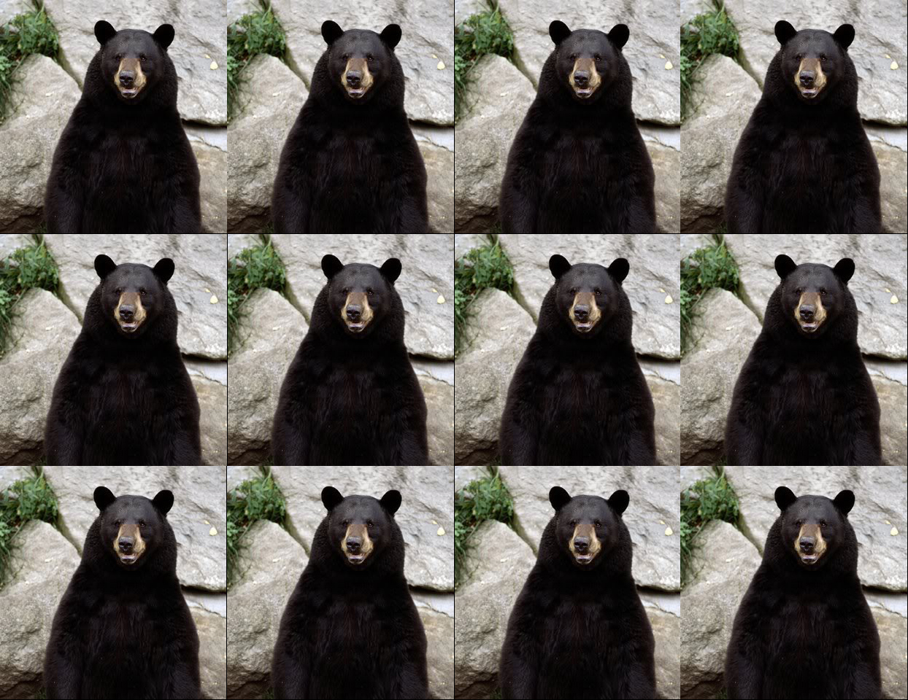

- Here's hoping it stays that way - We have a plan in place, in case it doesn't - Come to class healthy, masked, and prepared - **Please make an effort to talk more loudly when asking questions or answering!** - You have no excuse to come to class sick! - The attendance policy is lax, and you can always just podcast. --- ### Classroom safety requirements - No eating or drinking in class, sorry! - Everyone must properly wear face coverings. - Stay current with your COVID-19 testing. - Monitor your symptoms, stay home if you’re sick and report positive cases. - Keep your hands clean, cover your cough and don’t touch your face. --- ### Exam Information - 100 question multiple choice exam - Featuring material from the entire duration of the course. - Use the [study guide](https://wstyler.ucsd.edu/docs/l101_study_guide.html) - Exam tips and policies are at <http://savethevowels.org/exam> - You may create a 3 inch by 5 inch handwritten note card to bring to the exam. You'll also get a copy of the official IPA chart and our phrase structure rules. - Details at <http://savethevowels.org/exam> - **If you need special accommodations for the exam, I need you to reach out to me again to plan before Thursday** --- ### Some of my [Exam Tips](https://wstyler.ucsd.edu/exams/) - Choose the best answer - Skip questions you don't know and come back - Double-check your answers before you turn in the test - Study by explaining! - If you don't know the answer at the end of the test, write down your best guess - Study in several sessions across a few days, rather than 'cramming' --- ### Some of the [Exam Rules](https://wstyler.ucsd.edu/exams/) - Bring your student ID card and some pencils, we'll provide answer sheets - Electronic devices are not allowed to be used *or even visible* during an exam - If you have a question about any part of the exam, raise your hand - Students missing the exam without documented good cause will get a 0 on the exam --- ### If you need special accommodations for the exam, I need you to reach out to me again to plan before Thursday  ---